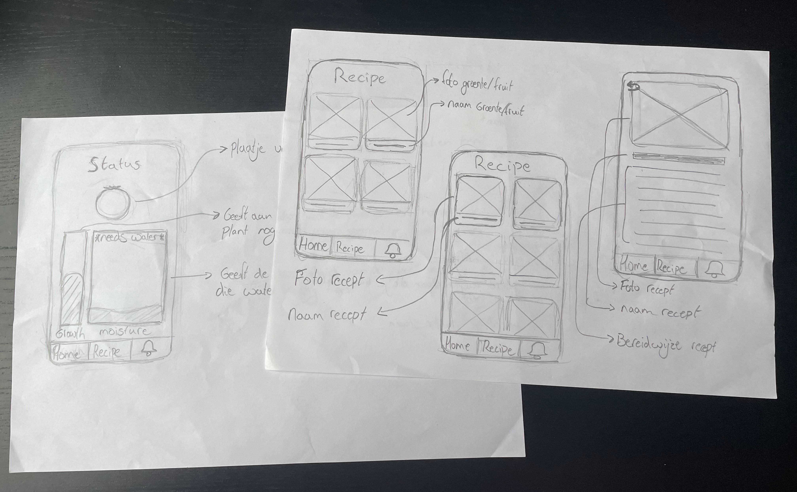

Smart Planter
De smart planter is een app voor je telefoon die bijhoudt wanneer je je planten water moet geven. Deze app is bedoeld voor kweek planten die je in je kamer kan zetten.

Opdrachtgever
Creating 010
Jaar
2021 - Leerjaar 1 CMD
De opdracht
De opdrachtgever voor dit project was Creating 010. Creating 010 had bij ons de volgende vraag neergelegd: "Hoe kun je lokaal en duurzaam geproduceerde voeding toegankelijk maken voor iedereen?” Deze vraag hadden ze bij ons neergelegd omdat de manier waarop mensen voedsel produceren en consumeren heel slecht is voor het milieu en ze daar een oplossing voor wilden.
Discover fase
Om te beginnen met dit project heb ik eerst onderzoek gedaan naar de doelgroep. Ik had voor dit project de doelgroep studenten gekozen, dit deed ik omdat studenten niet snel lokaal en duurzaam voedsel eten. Door deze interviews te houden kwam ik erachter welke problemen ze hadden. Zo kochten ze geen lokaal en duurzaam voedsel omdat ze het te duur vonden. Ook kwam ik erachter dat de studenten die ik sprak niet goed hun planten verzorgde en dus ook geen voedsel zelf konden verbouwen.
Design fase
Tijdens de design fase had ik een paar concepten bedacht die mijn doelgroep zou kunnen helpen. Een concept daarvan was de smart planter, de smart planter is een app voor je telefoon die bijhoudt wanneer je je planten water moet geven. Deze app is bedoeld voor kweek planten die je in je kamer kan zetten. Voordat ik een prototype ging maken heb ik eerst wat wireframes gemaakt om te kijken het prototype eruit kon komen te zien. Het eerste prototype dat ik ging maken voor mijn concept had ik nog heel simpel gehouden. Ik had alleen de nodige features in mijn prototype gezet en met maar heel weinig kleuren. Dit prototype had ik getest bij de doelgroep en de feedback die ik daarvan kreeg had ik weer verbeterd in mijn prototype. Voor mijn tweede prototype had ik ook nog verschillende style tiles gemaakt om te kijken wat de doelgroep het fijnste vind qua style. Het tweede prototype had ik ook weer getest samen met de style tile. Hier kreeg ik ook weer feedback op wat ik weer kon aanpassen in mijn prototype.
Deliver fase
Na alle feedback die ik had gekregen was het tijd om mijn high-fidelity prototype te maken. In dit prototype hield ik rekening met alle feedback die ik had gekregen door het hele project. Om mijn product te presenteren aan de opdrachtgever had ik een productvideo gemaakt. Deze video had ik gemaakt met adobe after effects en premiere pro.

Wat heb ik geleerd?
Ik heb tijdens dit project best wel veel geleerd omdat ik het hele project in mijn eentje moest doen. Er zijn dan best wel veel taken die je moet doen wat het best wel lastig maakt. Er zijn dan bijvoorbeeld ook taken die ik minder leuk vind die ik dan ook moet doen. Zo vind ik bijvoorbeeld onderzoeken niet heel leuk om te doen, maar omdat ik in mijn eentje ben moest ik dat wel doen. Hierdoor heb ik meerdere dingen gedaan die ik anders niet zo vaak doe.